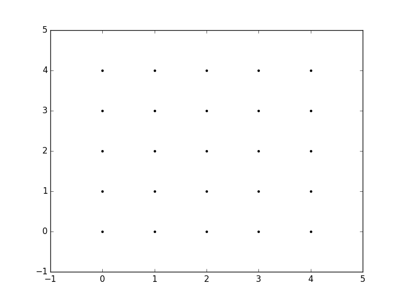
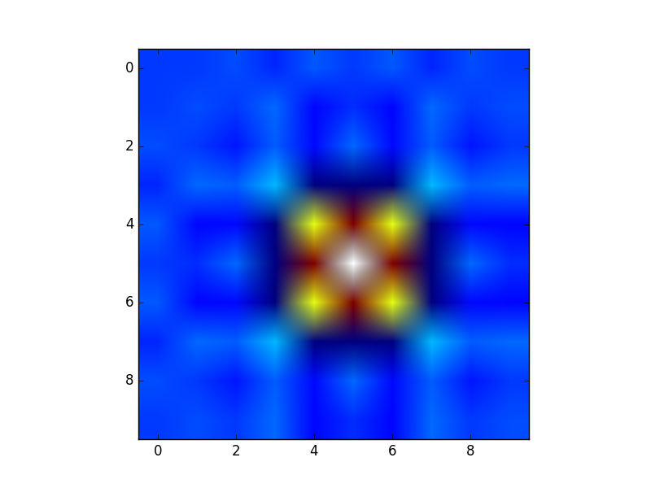
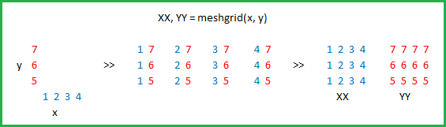

What is the purpose of meshgrid in Python / NumPy?
Can someone explain to me what is the purpose of meshgrid function in Numpy?
I know it creates some kind of grid of coordinates for plotting, but I can't
really see the direct benefit of it.
I am studying "Python Machine Learning" from Sebastian Raschka, and he is using it for plotting the decision borders. See input 11 here.
I have also tried this code from official documentation, but, again, the output doesn't really make sense to me.
x = np.arange(-5, 5, 1) y = np.arange(-5, 5, 1) xx, yy = np.meshgrid(x, y, sparse=True) z = np.sin(xx**2 + yy**2) / (xx**2 + yy**2) h = plt.contourf(x,y,z)
Please, if possible, also show me a lot of real-world examples.
Answer
The purpose of meshgrid is to create a rectangular grid out of an array of x
values and an array of y values.
So, for example, if we want to create a grid where we have a point at each
integer value between 0 and 4 in both the x and y directions. To create a
rectangular grid, we need every combination of the x and y points.
This is going to be 25 points, right? So if we wanted to create an x and y array for all of these points, we could do the following.
x[0,0] = 0 y[0,0] = 0 x[0,1] = 1 y[0,1] = 0 x[0,2] = 2 y[0,2] = 0 x[0,3] = 3 y[0,3] = 0 x[0,4] = 4 y[0,4] = 0 x[1,0] = 0 y[1,0] = 1 x[1,1] = 1 y[1,1] = 1 ... x[4,3] = 3 y[4,3] = 4 x[4,4] = 4 y[4,4] = 4
This would result in the following x and y matrices, such that the pairing
of the corresponding element in each matrix gives the x and y coordinates of a
point in the grid.
x = 0 1 2 3 4 y = 0 0 0 0 0
0 1 2 3 4 1 1 1 1 1
0 1 2 3 4 2 2 2 2 2
0 1 2 3 4 3 3 3 3 3
0 1 2 3 4 4 4 4 4 4
We can then plot these to verify that they are a grid:
plt.plot(x,y, marker='.', color='k', linestyle='none')

Obviously, this gets very tedious especially for large ranges of x and y.
Instead, meshgrid can actually generate this for us: all we have to specify
are the unique x and y values.
xvalues = np.array([0, 1, 2, 3, 4]); yvalues = np.array([0, 1, 2, 3, 4]);
Now, when we call meshgrid, we get the previous output automatically.
xx, yy = np.meshgrid(xvalues, yvalues) plt.plot(xx, yy, marker='.', color='k', linestyle='none')

Creation of these rectangular grids is useful for a number of tasks. In the
example that you have provided in your post, it is simply a way to sample a
function (sin(x**2 + y**2) / (x**2 + y**2)) over a range of values for x
and y.
Because this function has been sampled on a rectangular grid, the function can now be visualized as an "image".

Additionally, the result can now be passed to functions which expect data on
rectangular grid (i.e. contourf)
Suggest
Courtesy of Microsoft Excel:
